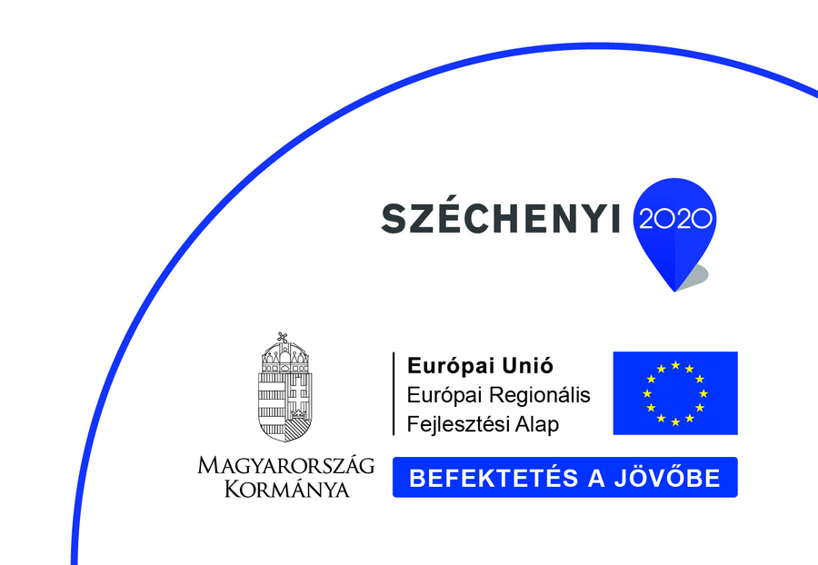

// Precíziós fémmegmunkálás & szoftver
Precíziós gyártás,
mérhető minőséggel
Szerszámkészítés és komplett CNC-forgácsolás egy üzemben, vasút-, gépjármű- és repülőgépipari beszállítói minőségben — saját fejlesztésű gyártásirányító szoftverrel, a Workflow Pro-val.
// Géppark
Élvonalbeli gépek, egy üzemben
DMG MORIMAZAKJUNKERSODICKCHARMILLESRENISHAWWENZELHARTFORD
Megvan a géped hozzá? Mi is.
Küldd el a rajzot — visszajelzünk a megmunkálhatóságról és az árról.